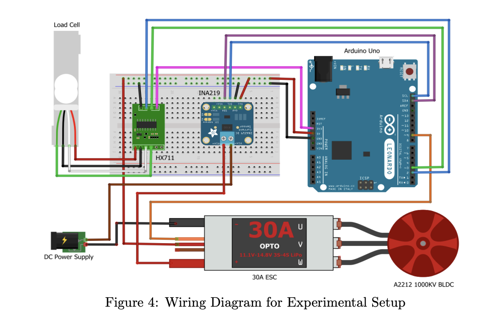
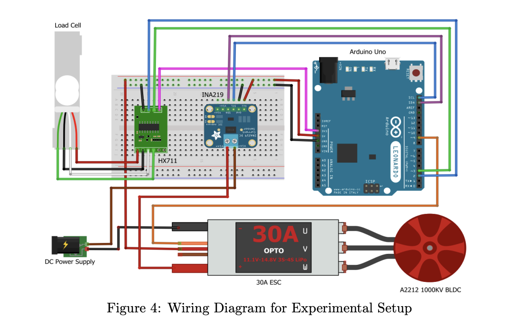

Home
Toroidal Propellors Vs 3-Blade Propeller
Based on MIT Toroidal Propeller
The project involved comparing the performance of a conventional three-blade propeller to that of a toroidal propeller design.
The objective of the project was to evaluate the comparative merits of the toroidal propeller design in relation to the conventional design, specifically focusing on efficiency, thrust, and noise reduction. To measure thrust, a 1kg load cell was utilized.
The study unequivocally demonstrated the superiority of the toroidal propeller design over the conventional design in terms of efficiency, thrust, and noise reduction. Notably, the toroidal propeller exhibited an enhanced efficiency of up to 30% when compared to the conventional design. Additionally, it generated less noise and produced greater thrust, further affirming its advantages.
In summary, this project serves as a compelling illustration of the potential advantages associated with exploring innovative propeller designs that can significantly enhance performance and efficiency..
Setup
 

CONTACT ME
Sameeriqkhan@gmail.com